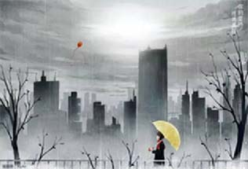
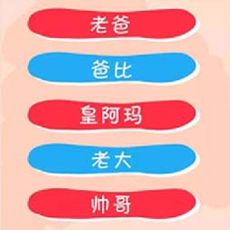

我有一壶酒，足以慰风尘。 每个人都曾孤独过，也曾看到过别人的孤独。如果生活是一坛老酒，那么孤独就是酒后的一次蓑衣雨行。 2016-7-19 00:00  从来没有一种坚持会被辜负。 谁的人生不是荆棘前行，你跌倒的时候，懊恼的时候，品尝眼泪的时候，都请你不要轻言放弃，因为从来没有一种坚持会被辜负。请你相信，你的坚持，终将美好。 2016-7-19 00:00  当小周周会说话，她会跟她的前世情人周杰伦说... 周杰伦、周董、超人、超级奶爸，我的爸爸有好多个名字他为我谱写了一曲前世情人我的出生延续了两世的缘分。 2016-7-19 00:00